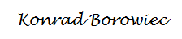

Cześć! Nazywam się Konrad Borowiec.
Z wykształcenia niedoszły ekonomista (ciągle student). Z zawodu prezes (branża interaktywna).
Mam świra na punkcie jazdy na motocyklu (liczy się tylko Ducati). Zapalony perkusista (niestety na razie
bębny kurzą się w garażu) i zdeklarowany przeciwnik biegania (nie ma nic głupszego).
Kiedy mam wszystkiego dość lepię pierogi po nocach (efektem ubocznym jest mieszkanie w mące). Kucharz-amator.